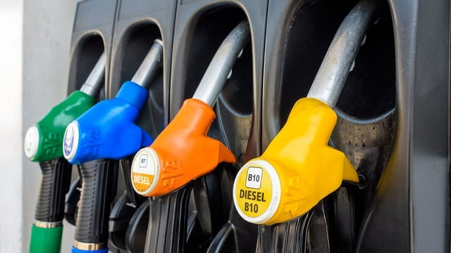
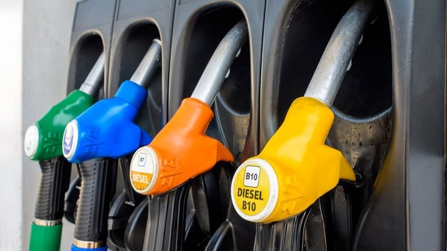

Indonesia telah berperan aktif dalam pencapaian Sustainable Development Goals (SDGs). Pemerintah Indonesia telah mencapai 62,5% dari 222 indikator SDGs yang on track hingga tahun 2024. Kemajuan ini jauh lebih baik dibandingkan dengan rata-rata global sebesar 17%2. Pada tahun 2019, posisi Indonesia dalam indeks SDGs global berada di urutan 102. Namun, pada tahun 2023, peringkat naik drastis menjadi 75, menunjukkan bahwa berbagai program dan kebijakan yang diluncurkan pemerintah sudah mulai membuahkan hasil.
Salah satu strategi yang diterapkan adalah melibatkan semua pihak, termasuk swasta dan masyarakat, dalam upaya mencapai target-target SDGs. Komitmen pemerintah Indonesia terhadap SDGs tidak hanya diwujudkan dalam bentuk program dan kebijakan, tetapi juga melalui langkah-langkah strategis dalam pembiayaan. Salah satu inovasi penting adalah penerbitan 💫Peraturan Presiden Nomor 111 Tahun 2022 tentang SDG Bond. Instrumen keuangan, dirancang untuk membiayai proyek-proyek yang berdampak langsung pada sektor-sektor penting seperti kesehatan, pendidikan, dan akses telekomunikasi. Dengan pembiayaan yang lebih terarah dan terukur, proyek-proyek SDGs diharapkan dapat lebih cepat terealisasi dan memberikan dampak positif yang lebih luas bagi masyarakat. 🤩
Pemerintah juga menyadari bahwa pencapaian SDGs tidak bisa dilakukan sendirian. Kemitraan dengan universitas, lembaga pendidikan, dan sektor swasta menjadi salah satu kunci keberhasilan. Misalnya, universitas 🏫 berperan penting dalam menyediakan penelitian dan inovasi yang mendukung tujuan-tujuan SDGs.
🎀Beberapa langkah nyata yang sudah diambil Indonesia adalah :